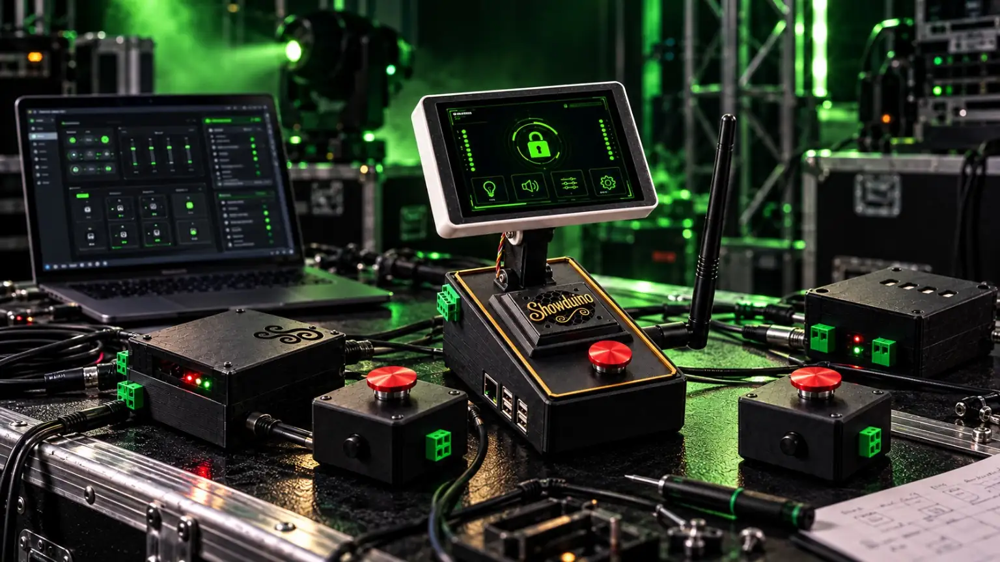

REPAIRABLE BY DESIGN
What's inside Showduino?
Ordinary, replaceable development boards rather than a sealed custom-PCB controller. Each module has a specific role, service documentation and firmware. These are reference/vendor photographs; a few are representative of the board family rather than a verified photo of the fitted revision.
 CORE · EXACT MODEL
CORE · EXACT MODELWaveshare ESP32-P4-Module-DEV-KIT
P4 Show Engine, mounted in the main Showduino enclosure beneath the tilting touchscreen. Runs cues, storage, system audio, local lighting and the Emergency latch.
Replacement: same P4 board revision, reflash Show Engine, fit microSD/configuration, verify UART, safety and audio before use.
Manufacturer image: Waveshare

CORE · ACTUAL SHOWDUINO PRODUCT IMAGEESP32-S3 Director touchscreen
The 800×480 operator touchscreen is mounted above the main enclosure. It sends requests; the P4 remains authoritative.
Replacement: match ST7262/GT911 panel, flash Director firmware, restore peer configuration and test touch calibration.
Showduino project image, not an internal PCB identification photo
 CORE · REPRESENTATIVE BOARD FAMILY
CORE · REPRESENTATIVE BOARD FAMILYDedicated ESP32-S3 Communications Controller
ESP-NOW and Wi-Fi bridge. Connects the Director and specialist nodes to the P4 over UART GPIO17/18 → P4 GPIO4/5.
Replacement: confirm memory variant and pin map, flash Comms, restore pairing/MAC and Wi-Fi settings, test the P4 link.
Vendor photo (Waveshare-family S3), board revision may differ from fitted unit
 SPECIALIST · MODEL FAMILY
SPECIALIST · MODEL FAMILYAi-Thinker ESP32-A1S Audio Kit V2.2
Separate programme-audio Node with ES8388 codec and local SD WAV playback. Not the P4 system or PCM ambient audio.
Replacement: check A161/ES8388 variant (not AC101), flash Audio Node, restore media and validate speaker/emergency WAV.
Supplier image: Probots. Inspect board revision before ordering
 SPECIALIST · REPRESENTATIVE BOARD FAMILY
SPECIALIST · REPRESENTATIVE BOARD FAMILYESP32-C3 Super Mini OLED
Used for separate Pixel and wireless Emergency Node roles. Pixel data is GPIO2; OLED SDA5/SCL6. Emergency GPIO4 requires physical confirmation.
Replacement: flash the correct role firmware, assign a unique ID, set pixel count and retest Emergency input where relevant.
Vendor image: Allegro. Exact OLED PCB variant must be checked
 SPECIALIST · REPRESENTATIVE HARDWARE
SPECIALIST · REPRESENTATIVE HARDWAREESP32_MOS_X4 MOSFET Node
Four-channel low-voltage digital/PWM output module. The Showduino firmware is implemented; board mapping and physical outputs still need commissioning.
Replacement: verify the exact 303E32NMOS4 board and terminals before wiring; load test DC outputs only. Never connect mains directly.
Supplier image: HappyFish/marketplace; similar family, exact PCB not verified